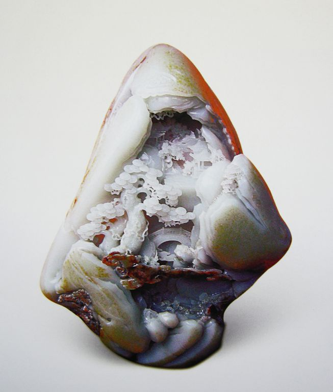
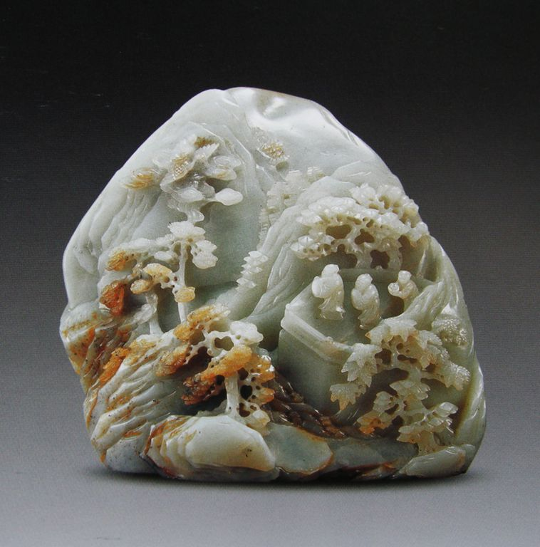
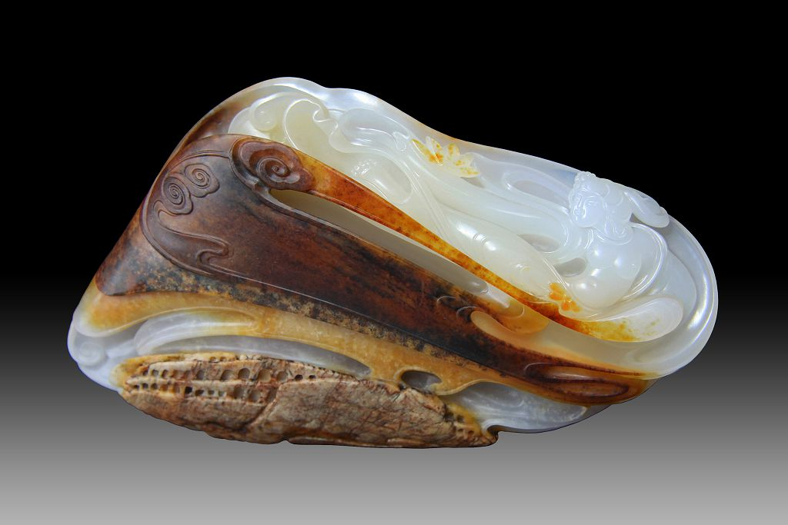
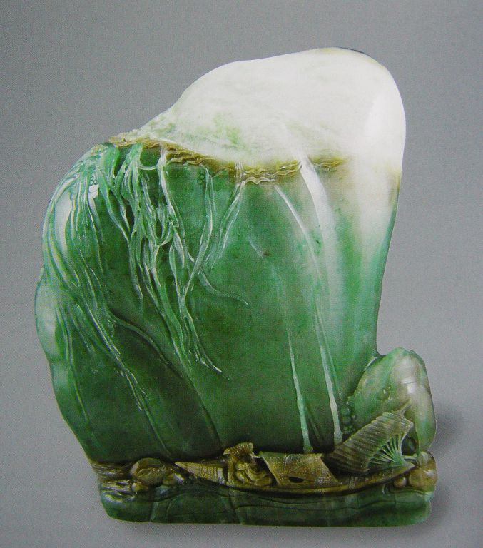

天工玉意自然美——山子玉器赏析
山子玉是玉器雕琢中的一种形式，它依照玉料形体，巧作山水的造型。此时的“相玉”已不仅仅是“应物象形、依势造型”，而是要深刻领悟玉意，在形、色之间去感悟玉意；在“相玉”之中去寻觅着山川、流水的踪迹；琢磨出天地之间的生命律动。通过与玉的对话、交流和体悟的过程，使心灵和玉意产生共鸣，此时，砣轮渐渐的勾画出玉意，琢磨出山子玉器的自然美意。 学习目标： 1. 了解山子玉的自然美和雕饰美 2. 熟悉多种雕刻形式的灵活运用 3. 懂得艺术经营和玉意表现 教学要求： 过本章的学习，使学员能理解天然去雕饰是玉器琢磨的最高境界，使玉意和人意达到高度的融合；学会多种雕刻形式的合理运用；认识到艺术经营能提升玉器的美感和观赏的意味。
一、自然的雕饰 山子玉的雕琢，追求着天然去雕饰的理想境界。在中国艺术史上有着两种对美的认知，既“错采镂金”之美和“芙蓉出水”之美。前者为雕饰之美，后者为自然之美。而治玉艺术正是使这两种美感自然融合,完美统一，达到“绚烂之极归于平淡”的境界，这也正是玉的性格对琢玉的要求。而山子玉器的雕琢正是琢玉者根据玉料的自然形态赋以幽山流水之想象，使自然之境融于玉料特质之中，将雕琢美和自然美得到高度、完美的统一。 1.雕琢美 琢玉的雕琢美包括两个方面：造型美和技巧美。 其一，造型美由外形和纹饰组成，图饰大部分来自于我们民族特有的吉祥意蕴和审美情趣。为了使玉器传递美好的信息，治玉运用了最简练、优雅、生动的线形，去表现玉器优美的形态和完美的纹饰，无论是形态之线还是纹饰之线的表达全在自然中流出，这是雕琢的自然，刻意的自然，经营中的自然。 其二，技巧美即雕琢之美。千百年来，玉工总结了一系列的琢玉技法，无数作品展现出作者驾驭玉材和工具的能力。运砣沉着稳健，力到工就；勾线犹如神助，高古游丝；刀法多变，有鬼斧神工之力。丰富、精妙的琢玉语言，使玉器的形式美和意蕴美得到充分展现。赏玉有“绚烂之极”之说，印证了玉器自古就提倡巧夺天工的雕琢美（图8-1-1）。  图8-1-1 清乾隆 三顾茅庐山子玉 图8-1-1 清乾隆 三顾茅庐山子玉 2.自然美 山子玉器的自然美的体现，还在于要遵循“忠实于天然玉质材料”的琢玉原则，因此，经过历代琢玉，形成了一整套“因料设计、因材施艺”的治玉方法和艺术特点，其中也蕴含着一个重要的美学思想，就是“要质地本身发光，才是真正的美”。 完整的山子玉经历了亿万年大自然的历练，蕴含着特有的自然美，而每一块玉料又有不同的形态、皮质、色泽等，因此，山子玉的琢磨不仅要有高超的技巧，更要有不凡的智慧，深刻领悟玉质、人意和技巧的内在联系，巧妙运用，融会贯通。在雕琢中去寻求一种和玉的温润性情、形态色泽相吻合的形式语言，在造型上无论变形或抽象、奇异和俊俏、精细和光素，都要应顺玉的本质特性，造型、图形和工艺要服从于玉料的本质特征，具有匠心的治玉就象治理土地一样，要因势利导，使人工的雕琢提升到自然的“天工”，达到雕饰美和自然美的统一（图8-1-2）。  图8-1-2 清代 白玉人物纹山子 图8-1-2 清代 白玉人物纹山子 3.适形创意 ① 适天然玉质之形 在适形构思中，它的思考点是围绕玉料的自然之“形”，即玉料的性质、纹理、瑕疵、形态等因素而展开的艺术构思。 玉料由于它的品种不同，因此有着不同的特征，如质地的紧密和较松，纹理、皮色面积和深度，形态的圆润和俊俏等，这些料形的特质对于设计来说，是一种制约，而对于有创意的雕刻师来说，却把其看作是一个启示，灵感由此而来。设计要适应这些特点，顺其自然，充分显示玉质自身的优美语言和表达形式，使创意融于自然的玉质之中，塑造出天趣盎然的玉器作品，自然的流露，越增其美。因此，对于山子玉器的设计，首要任务是还是“相玉”，即对所要雕凿的玉料进行仔细地察看，反复推敲，细致琢磨，考虑周全，才能下刀，行话说“一相顶九工”就是这个道理。“相玉”的过程最能体现雕刻者的艺术水平，只有全面地深层地了解玉料，设计雕刻才能胸有成竹，得心应手，巧得佳作。 ② 创高山流水之意 山子玉顾名思义是以山水为主的题材，因此，在观察玉料的同时，它的色泽、裂痕、形状都成为启示、诱发、勾画山水的基本语言，也许是远山，也许是幽谷；似乎是红叶秋山,似乎又是晚霞牧归，这时双眼似乎能够透过玉石，寻找组合山水的元素，同时脑海也呈现出一幅幅不同的画意，以最佳的视角、最佳的意境赋予玉料之中。 ③ 意形天合自然美 山子玉器它的图案创意和造型款式，它的图形意境和玉料形质，要自然、贴切、合理的结合，呈现出天作之合的艺术效果。因此，山子玉的琢磨不仅有高超的技巧，更要有不凡的智慧，深刻领悟材料、人意和技巧的内在联系，使它们巧妙运用，融会贯通，天工雕饰（图8-1-3、图3-1-4）。 图8-1-3 和田籽玉 枫桥夜泊 正面（神工奖金奖）薛春梅设计制作
 图8-1-4 和田籽玉 枫桥夜泊 背面 图8-1-4 和田籽玉 枫桥夜泊 背面
二、多种的雕琢 在山子玉的雕琢中为了表现一定的意境，在雕刻形式上采用了多中的雕刻形式，其中有圆雕、浮雕、透雕、线刻、薄意，充分表现出不同的雕刻技法。 山子玉本身就是一个具有三维空间的立体圆雕，可以从多个方向去观赏它的造型美感，随着视点的移动，山子的形体展现出不同的画面。然而，总有一个面是最佳观赏角度，即正面。 浮雕在一般的雕刻中观赏面只有正面，而山子玉雕中它的观赏面不仅仅有主要的一面，有时是随着视点的移动而使浮雕产生转折、起伏，又引向背面，观赏极富意味。 透雕在山子玉的雕琢中不仅使形象清晰，具有玲珑剔透的效果，同时，显示出作者高超的琢玉技巧。 薄意，在山子玉中体现出细腻的砣韵和刀味，又富有诗情画意。 山子玉器中的各种雕法不能截然区别，有时圆雕中有浮雕的形式，浮雕中也有近似圆雕的表现。山子玉器琢磨往往把圆雕、浮雕、透雕、线刻、薄意融和在一起，成为独特的工艺形式（图8-2-1至图8-2-4）。 图8-2-1 清乾隆 青白玉留皮福禄寿山子摆件
 图8-2-2 清乾隆 青金石山水人物山子 图8-2-2 清乾隆 青金石山水人物山子  图8-2-3 清乾隆 白玉抚琴图山子 图8-2-3 清乾隆 白玉抚琴图山子  图8-2-4 翡翠 乐山（天工奖铜奖）作者：翁伟民 图8-2-4 翡翠 乐山（天工奖铜奖）作者：翁伟民
三、观赏的韵味 在山子玉不大的空间之中，我们可见博大的山河之气，在此运用了艺术的对比手法来达到以小见大的艺术效果。对比法仍在艺术辩证法的范畴之中，如：动与静、张与弛、虚与实、藏与露、疏与密、曲与直、自然与雕琢等等，这些形成对立和反差，而最后去求得和谐、统一。这就是艺术的辩证法，这其实也是中国古老的阴阳对立规律在山子玉雕琢中的一大体现。 1.大小之美 在山仔玉雕中何为大，何为小，那只有再对比之中才有鉴别，大面积的山体外形保留着自然的玉质或皮质，大美不言，无需雕琢，有素面朝天的自然美；亭宇为小、人物为小、草木为小，通过细写深描，精雕细琢，展现出鬼斧神工的雕琢美，在小巧、细腻、精致的衬托下、对比下，更见玉山子的浑然博大，这正是山子玉艺术造型的特点。 2.远近之境 山子玉有丰富的层次感，在构图上有中国山水画的“平远”、“高远”、“深远”的画理，在层层叠叠的雕刻中使我们的视点游览于远近的高山流水、亭宇楼阁、云绕松柏、曲径通幽的景致之中，近景砣工浑然雕饰，中景雕琢精美绝伦，远景刻画细腻曼妙，在我们欣赏雕工的同时，似乎已回归自然，享受自然，在远近之境中，自然而然地将宇宙和心灵融为一体，顿悟有超凡脱俗之感，山子玉的魅力就在于将你引入到情景交融的意境之中。 3.动静之韵 山子玉的设计有许多将动静对比的处理融于入构思之中，如山静水动、树静鸟动、建筑静人物动等等，用动静对比来勾画一种意境。如（图8-3-1）山子玉丽人行，作者将淡黄色的玉料作横向的山体构图，既有宁静之感，又为“行” 作了意境的铺垫。从中的细心琢磨，层层刻画，作了绝妙的动静安排：山体的静，楼宇的静，仕女徐行，马蒂声声，摇曳的杨柳，飘动的流云，勾画出一片春意，使观者的思绪随着动静之韵去体悟自然，去回味玉意。  图8-3-1 黄玉 丽人行 作者：孟庆东 图8-3-1 黄玉 丽人行 作者：孟庆东4.诗情画意 诗，凝练而优美，意境深远，回味无穷。治玉同样如此，追求“画中有诗，诗中有画”的境界。尤其作为山子玉，大部分保留着天然的原形，存有一种神秘、朦胧之美，往往会引作者起无限的遐思，治玉者加以巧妙的构思和优美的描绘则更容易使山子玉富有诗情画意。 图8-3-2流水人家，山子玉的造型完全是原始的籽玉形态，仿佛大自然有意的在羊脂玉上泼洒着层层墨韵，在黑白之间，裂变之间，构画成黑瓦、白墙，晕染出暮色、月影。拉近的有苍劲柳树，推远的有羞涩芭蕉，炊烟、流云纵升横流，潺潺的流水由平远至深远，在对比的矛盾之中交织成一幅和谐的诗情画意的水墨乡情画面。  图8-3-2 和田籽玉 流水人家（正面） 赵丕成设计制作 图8-3-2 和田籽玉 流水人家（正面） 赵丕成设计制作然而我们再看它的反面，景致一下拉得很近，展现的是水乡一角， “屋漏痕”沁入砖墙之间，似见水珠滴滴下坠，河面泛起层层涟漪，在这一宁静的幽景之中我们似乎能听到水的滴答之声，顿悟：简朴、清净、淡然之美，不乏有诗意的境界，有不可言传的意境美。因此，琢玉要经营，意韵更美妙（图8-3-3）。  图8-3-3 和田籽玉 流水人家（背面） 图8-3-3 和田籽玉 流水人家（背面）山子玉的设计和立意中要充分发挥玉的自然美、意蕴美，以及雕琢的形式美的技巧美，使山子玉的创意和雕琢自然地进入玉质的画意之中，（图8-3-4玉料）料体不大，但在形态和色彩之间感到了自然天地的美妙，似乎看到了一条五彩祥云的神奇天路，又似乎看到了花雨飘洒的丝绸古道，在小小的玉料之中想象是漫无边际的，丰富多彩的，在砣轮渐渐的探索下，琢磨出舞动的飞天，古拙的石窟，金色的沙漠，飘绕的流云，形成了敦煌逸影的山子玉作（图8-3-5）。  图8-3-4和田籽玉 敦煌逸影原料 图8-3-4和田籽玉 敦煌逸影原料图8-3-5 和田籽玉 敦煌逸影（正面） 赵丕成设计制作
然而它的背面大面积的保留着籽玉撒金皮的皮质，犹如升腾的金色佛光，化作一片祥云，又映衬着一朵洁白的玉莲，在简洁的形式中给观者一个宁静和想象的空间……（图8-3-6）  图8-3-6 和田籽玉 敦煌逸影（背面） 图8-3-6 和田籽玉 敦煌逸影（背面）在典型的山子玉中往往借自然的玉料造型化作成山岳的造型，再雕饰于流水、亭宇、花木、鸟兽、人物等，借自然之物抒发心情，把“玉意”转化成立体的画意，凝固的诗情，使赏者见之心灵波动，玩之可思可感，思之回味无穷（图8-3-7、图8-3-8）。  图8-3-7 红玉 火焰山 张敏设计制作 图8-3-7 红玉 火焰山 张敏设计制作图8-3-8 独山玉 春雨润泽 作者：董学清
课外练习与思考： 1.说说不同的雕琢技法在山子玉器中的合理运用。 2.试一试将美的形式规律运用到其它玉器的设计之中去。 |